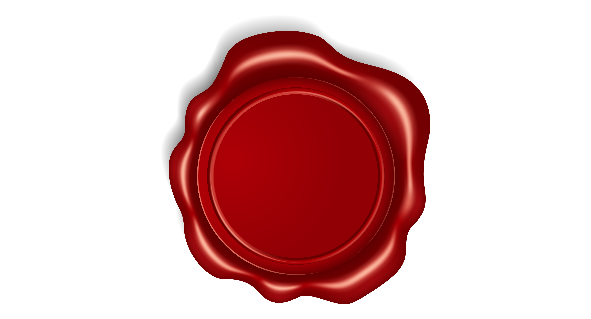
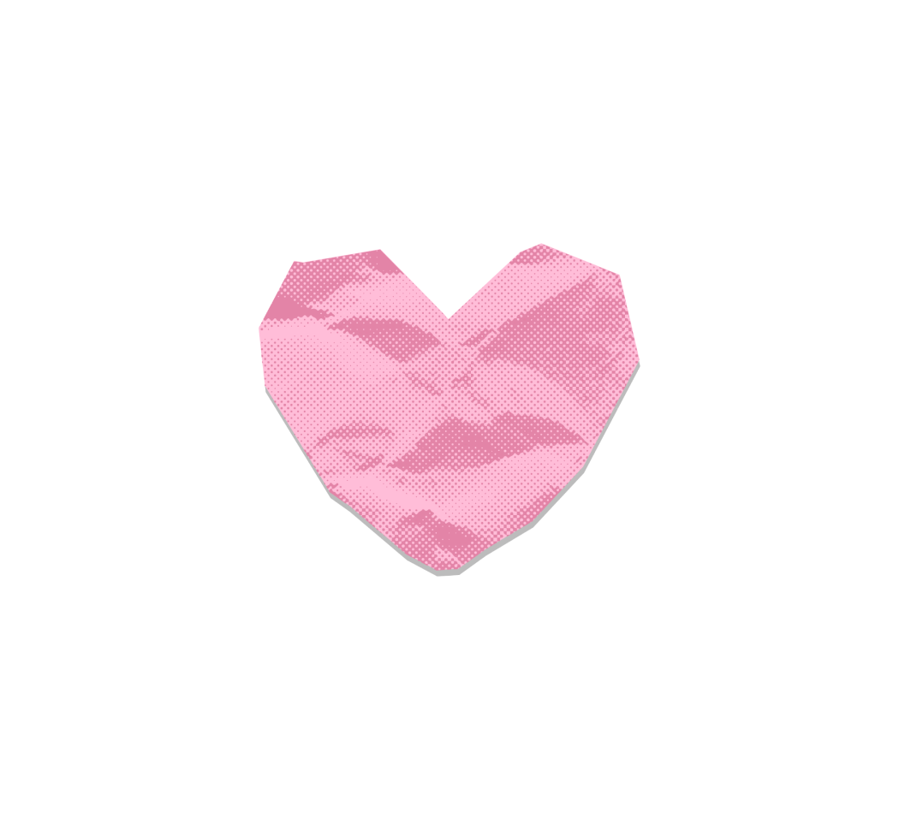

Type your letter here
Connecting...
Your letter is sealed and stamped.
Save my letter
ink color
stamp

sticker

empty paper
🗑️
Drag the paper to the trash to restart.
Start typing here..
Swipe left ←
Swipe left or flick phone left to return carriage.
Enable motion sensor